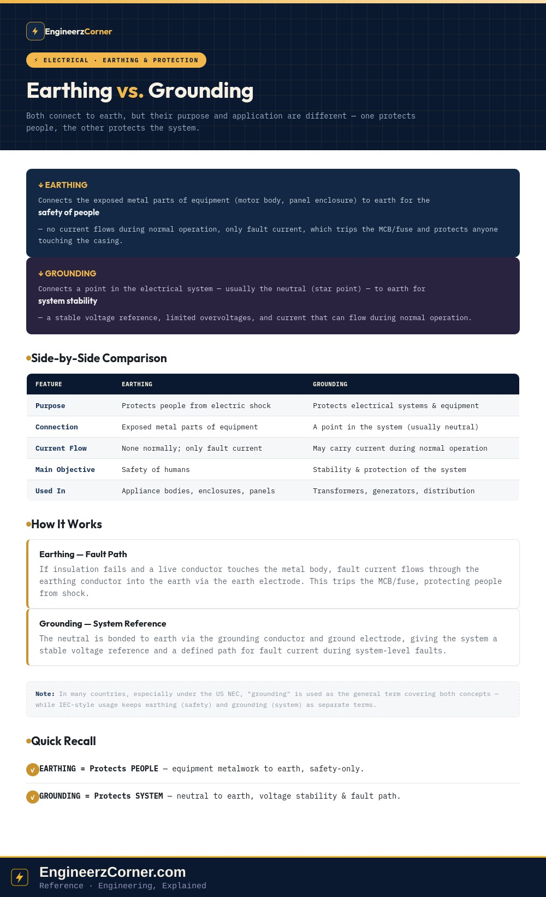

Ask an electrician what earthing is and what grounding is, and depending on where they trained, you might get the same answer twice, or two genuinely different ones. Both practices connect part of an installation to the physical earth through an electrode, and both use the phrase "connected to earth" — which is exactly why the terms get blurred. The distinction that actually matters is what gets connected, and why.

Earthing vs. grounding — purpose, connection point, current flow and where each is applied.
1. Earthing — protecting people
Earthing connects the exposed metal parts of equipment — a washing machine's metal body, an appliance casing, an electrical enclosure — to earth through an earthing conductor (commonly the green wire) and an earth electrode driven into the soil. Under normal operation, no current flows through this path at all.
If insulation fails inside the equipment and a live conductor touches the metal body, fault current now has a low-resistance path through the earthing conductor into the earth. That current flow is what trips the MCB or fuse, clearing the fault and protecting anyone who might otherwise have touched the now-live casing.
2. Grounding — protecting the system
Grounding connects a point in the electrical system itself — usually the neutral point (star point) of a transformer or generator — to earth through a grounding conductor and ground electrode. Unlike earthing, this path can carry current during normal operation, since a grounded neutral is part of the working circuit, not just a fault path.
Tying the neutral to earth gives the system a stable voltage reference, limits overvoltages that would otherwise stress insulation across the network, and ensures fault current has a defined path back to earth during system-level faults — which is what allows protection relays and breakers upstream to detect and clear those faults predictably.
| Earthing | Grounding | |
|---|---|---|
| Purpose | Protects people from electric shock | Protects electrical systems and equipment |
| Connection | Exposed metal parts of equipment | A point in the electrical system (usually the neutral) |
| Current flow | None in normal operation; only fault current | May carry current during normal operation |
| Main objective | Safety of humans | Stability & protection of the electrical system |
| Used in | Appliance bodies, enclosures, machinery, panels | Transformers, generators, distribution systems |
3. Why the terms get used interchangeably
In practice, a single physical earth grid often serves both functions on the same installation — equipment bodies and the system neutral can land on a shared or bonded earthing system, which is part of why the vocabulary blurs. Regional convention adds to it: in many countries, particularly under the US National Electrical Code (NEC), "grounding" is used as the general umbrella term for both the equipment-safety connection and the system-neutral connection, while other codes (largely IEC-derived) keep "earthing" for the equipment/safety side and "grounding" for the system side. Neither convention is wrong — they're just different vocabularies for describing where the wire goes and what it's there to do.
Quick understanding
Bonds equipment metalwork to earth so a fault trips protection before someone touching the casing is at risk. No current flows until something has already gone wrong.
Bonds the system neutral to earth for a stable voltage reference and a defined fault-current path. Can carry current as part of normal operation.
Key takeaways
- ✓Earthing connects exposed equipment metalwork to earth, purely for personnel safety — it carries no current until a fault occurs.
- ✓Grounding connects a system point, usually the neutral, to earth for voltage stability and a defined fault path — it can carry current normally.
- ✓Both rely on a low-resistance earth electrode, but they exist to protect different things: people versus the system.
- ✓Regional terminology varies — the US NEC tends to use "grounding" as the umbrella term for both, while IEC-style usage keeps the two words separate.